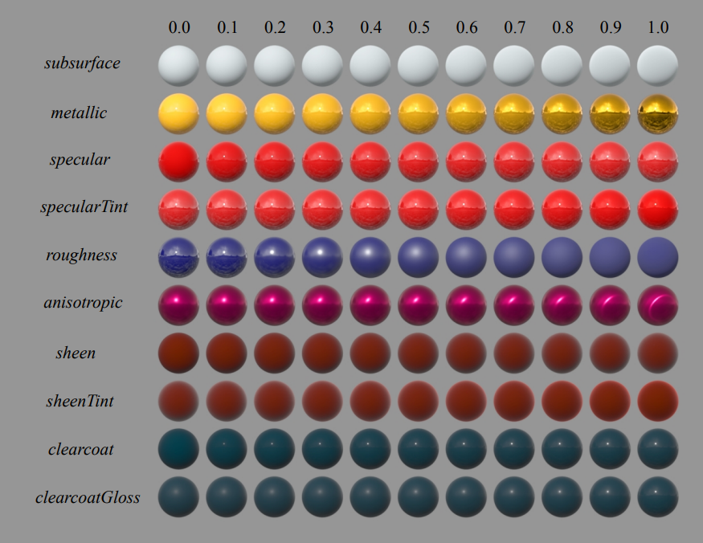

目前自己的离线光追渲染器已经实现了PT、SPPM、BDPT三种渲染器，然而材质系统只有可怜的Phong和Glass，场景表现力严重不足。虽然目前场景文件的导入还都内嵌在代码中，这确实十分的丑陋、不优雅，不过下一步准备用OpenGL+ImGui写个简单的界面，支持自定义场景，包括添加物体、修改材质、选择渲染方法、场景预览等常见的功能。Disney Principled BRDF由迪士尼在2012的sigraphic上提出，在之后2015年的sigraphics又将其扩展到了BSDF（本文不涉及），本文主要记录实现Disney BRDF(12)过程中涉及到的公式和代码，以及一些自己的理解，图形学入门中，如有错误，欢迎指正。

常说的漫反射项是光线进入到物体内部经过多次散射再从物体表面射出的部分，在实时渲染领域一般将其视为低频信息，因此会采用一些很粗糙的模型，比如lambert模型，直接将漫反射部分视作常数，这其实是很迷惑人的，以前使用Bling Phong模型，虽说它是个经验模型，能work就行，但很容易误导人。而次表面散射则是相对尺度更大的漫反射，如果光线进入物体表面后从离入射点很近的地方出射，或者说在一个像素范围内，那么被视为漫反射，而如果这个距离更大，则需要引入次表面散射的概念，即光线从表面入射后，在物体内部经过多次散射，最后从物体表面射出，入射点和出射点的距离不能忽略。不管是漫反射还是次表面散射，都是考虑折射到物体内部那部分光的能量，因此很多材质模型会使用菲尼尔项计算折射光的能量比例作为漫反射分量的乘积因子，比如著名的金属工作流。
f d i f f u s e = b a s e C o l o r π ( 1 + ( F D 90 − 1 ) ( 1 − cos θ i ) 5 ) ( 1 + ( F D 90 − 1 ) ( 1 − cos θ o ) 5 ) f_{diffuse} = \frac{baseColor}{\pi}(1+(F_{D90} - 1)(1 - \cos\theta_i)^5)
(1 + (F_{D90}-1)(1-\cos\theta_o)^5)
f d i f f u s e = π b a s e C o l o r ( 1 + ( F D 9 0 − 1 ) ( 1 − cos θ i ) 5 ) ( 1 + ( F D 9 0 − 1 ) ( 1 − cos θ o ) 5 )
F D 90 = 0.5 + 2 cos 2 θ d ⋅ r o u g h n e s s F_{D90} = 0.5 + 2 \cos^2\theta_d \cdot roughness
F D 9 0 = 0 . 5 + 2 cos 2 θ d ⋅ r o u g h n e s s
其中θ i \theta_i θ i θ o \theta_o θ o ω i \omega_i ω i ω o \omega_o ω o ω n \omega_n ω n θ d \theta_d θ d ω i \omega_i ω i ω o \omega_o ω o ω h = ( ω i + ω o ) / 2 \omega_h = (\omega_i + \omega_o)/2 ω h = ( ω i + ω o ) / 2 Hanrahan-Krueger BRDF 改进而来的公式：
f s u b s u r f a c e = 1.25 ⋅ b a s e C o l o r π ⋅ ( F s s ⋅ ( 1 cos θ i + cos θ o − 0.5 ) + 0.5 ) f_{subsurface} = 1.25\cdot \frac{baseColor}{\pi}\cdot (F_{ss}\cdot(
\frac{1}{\cos\theta_i+\cos\theta_o}-0.5
) + 0.5)
f s u b s u r f a c e = 1 . 2 5 ⋅ π b a s e C o l o r ⋅ ( F s s ⋅ ( cos θ i + cos θ o 1 − 0 . 5 ) + 0 . 5 )
F s s = ( 1 + ( F s s 90 − 1 ) ( 1 − cos θ i ) 5 ) ( 1 + ( F s s 90 − 1 ) ( 1 − cos θ o ) 5 ) F_{ss} = (1 + (F_{ss90} - 1)(1 - \cos\theta_i)^5)(1 + (F_{ss90} - 1)(1 - \cos\theta_o)^5)
F s s = ( 1 + ( F s s 9 0 − 1 ) ( 1 − cos θ i ) 5 ) ( 1 + ( F s s 9 0 − 1 ) ( 1 − cos θ o ) 5 )
F s s 90 = cos 2 θ d ⋅ r o u g h n e s s F_{ss90} = \cos^2\theta_d \cdot roughness
F s s 9 0 = cos 2 θ d ⋅ r o u g h n e s s
因为次表面散射和漫反射是同一个原理在不同尺度上的表现，所以Disney BRDF用subsurface参数来调整两者之间的过渡。另外这里的次表面散射用brdf来模拟，总体效果是使得漫反射更加平，十分trick，因此对于这一类材质的表现力十分有限，就当看看罢了。
Disney的镜面反射部分包括了表面镜面反射和清漆，均使用微表面模型。在微平面理论中，光线在物体表面的反射是完美的镜面反射，但因为宏观表面是由不同朝向的微观表面组成的，因此在宏观上会表现出粗糙。对于PBR材质，镜面反射一般使用Torrance-Sparrow微表面模型，其公式为：
f = F r ( θ d ) D ( θ h , ϕ h ) G ( ω i , ω o ) 4 cos θ i cos θ o f = F_r(\theta_d)\frac{D(\theta_h,\phi_h)G(\omega_i,\omega_o)}{4\cos\theta_i\cos\theta_o}
f = F r ( θ d ) 4 cos θ i cos θ o D ( θ h , ϕ h ) G ( ω i , ω o )
这个公式懂得都懂，就不再详细介绍了。值得注意的是在迪士尼给出的源码中，把分母项4 cos θ i cos θ o 4\cos\theta_i\cos\theta_o 4 cos θ i cos θ o G ( ω i , ω o ) G(\omega_i,\omega_o) G ( ω i , ω o ) D ( θ h , ϕ h ) D(\theta_h,\phi_h) D ( θ h , ϕ h )
Disney BRDF中镜面项的法线分布函数使用了Generalized-Trowbridge-Reitz(简称GTR)函数，其公式为：
D G T R ( θ h , ϕ h ) = c ( sin 2 θ h ( cos 2 ϕ α x 2 + sin 2 ϕ α y 2 ) + cos 2 θ h ) γ D_{GTR}(\theta_h,\phi_h) = \frac{c}{
(\sin^2\theta_h(
\frac{\cos^2\phi}{\alpha^2_x} + \frac{\sin^2\phi}{\alpha^2_y}
) + \cos^2\theta_h)^{\gamma}
}
D G T R ( θ h , ϕ h ) = ( sin 2 θ h ( α x 2 cos 2 ϕ + α y 2 sin 2 ϕ ) + cos 2 θ h ) γ c
其中c是归一化常数；θ h \theta_h θ h ϕ h \phi_h ϕ h α x \alpha_x α x α y \alpha_y α y γ \gamma γ γ \gamma γ γ = 2 \gamma = 2 γ = 2 γ = 1 \gamma = 1 γ = 1 α x \alpha_x α x α y \alpha_y α y
a s p e c t = 1 − 0.9 ⋅ a n i s o t r o p i c aspect = \sqrt{1-0.9 \cdot anisotropic}
a s p e c t = 1 − 0 . 9 ⋅ a n i s o t r o p i c
α x = r o u g h n e s s 2 / a s p e c t \alpha_x = roughness^2 / aspect
α x = r o u g h n e s s 2 / a s p e c t
α y = r o u g h n e s s 2 ⋅ a s p e c t \alpha_y = roughness^2 \cdot aspect
α y = r o u g h n e s s 2 ⋅ a s p e c t
Disney BRDF只会用到γ = 2 \gamma=2 γ = 2 γ \gamma γ
D G T R ( θ h , ϕ h ) = c ( sin 2 θ h / α 2 + cos 2 θ h ) γ D_{GTR}(\theta_h,\phi_h) = \frac{c}{
(\sin^2\theta_h/\alpha^2 + \cos^2\theta_h)^{\gamma}
}
D G T R ( θ h , ϕ h ) = ( sin 2 θ h / α 2 + cos 2 θ h ) γ c
对于各向同性的微表面分布，通过积分求解得到其通用表达式以及对应的采用公式：
D G T R ( θ h , ϕ h ) = ( γ − 1 ) ( α 2 − 1 ) π ( 1 − ( α 2 ) 1 − γ ) 1 ( 1 + ( α 2 − 1 ) cos 2 θ h ) γ D_{GTR}(\theta_h,\phi_h) =
\frac{(\gamma - 1)(\alpha^2 - 1)}{\pi(1-(\alpha^2)^{1-\gamma})}
\frac{1}{(1 + (\alpha^2 - 1)\cos^2\theta_h)^\gamma}
D G T R ( θ h , ϕ h ) = π ( 1 − ( α 2 ) 1 − γ ) ( γ − 1 ) ( α 2 − 1 ) ( 1 + ( α 2 − 1 ) cos 2 θ h ) γ 1
ϕ h = 2 π ξ 1 \phi_h = 2\pi\xi_1
ϕ h = 2 π ξ 1
cos θ h = 1 − ( ( α 2 ) 1 − γ ( 1 − ξ 2 ) + ξ 2 ) 1 1 − γ 1 − α 2 \cos\theta_h=\sqrt{
\frac{1-((\alpha^2)^{1-\gamma}(1-\xi_2)+\xi_2)^{\frac{1}{1-\gamma}}}{1-\alpha^2}
}
cos θ h = 1 − α 2 1 − ( ( α 2 ) 1 − γ ( 1 − ξ 2 ) + ξ 2 ) 1 − γ 1
当γ \gamma γ γ → 1 \gamma \rightarrow 1 γ → 1
D G T R 1 ( θ h , ϕ h ) = α 2 − 1 π ln α 2 1 ( 1 + ( α 2 − 1 ) cos 2 θ h ) D_{GTR_1}(\theta_h,\phi_h) =
\frac{\alpha^2 - 1}{\pi \ln\alpha^2}
\frac{1}{(1 + (\alpha^2 - 1)\cos^2\theta_h)}
D G T R 1 ( θ h , ϕ h ) = π ln α 2 α 2 − 1 ( 1 + ( α 2 − 1 ) cos 2 θ h ) 1
cos θ h = 1 − ( α 2 ) 1 − ξ 2 1 − α 2 \cos\theta_h=\sqrt{\frac{1-(\alpha^2)^{1-\xi_2}}{1-\alpha^2}}
cos θ h = 1 − α 2 1 − ( α 2 ) 1 − ξ 2
当γ = 2 \gamma=2 γ = 2
D G T R 2 ( θ h , ϕ h ) = α 2 π 1 ( 1 + ( α 2 − 1 ) cos 2 θ h ) 2 D_{GTR_2}(\theta_h,\phi_h)=\frac{\alpha^2}{\pi}
\frac{1}{(1+(\alpha^2-1)\cos^2\theta_h)^2}
D G T R 2 ( θ h , ϕ h ) = π α 2 ( 1 + ( α 2 − 1 ) cos 2 θ h ) 2 1
cos θ h = 1 − ξ 2 1 + ( α 2 − 1 ) ξ 2 \cos\theta_h=\sqrt{\frac{1-\xi_2}{1+(\alpha^2-1)\xi_2}}
cos θ h = 1 + ( α 2 − 1 ) ξ 2 1 − ξ 2
Disney的文档中提到，当γ = 3 / 2 \gamma = 3/2 γ = 3 / 2
对于各向异性的G T R 2 GTR_2 G T R 2
D G T R 2 a n i s o = 1 π 1 α x α y 1 ( sin 2 θ h ( cos 2 ϕ h α x 2 + sin 2 ϕ h α y 2 ) + cos 2 θ h ) 2 D_{GTR_2aniso} = \frac{1}{\pi}\frac{1}{\alpha_x\alpha_y}\frac{1}
{(\sin^2\theta_h(\frac{\cos^2\phi_h}{\alpha^2_x} + \frac{\sin^2\phi_h}{\alpha^2_y}) + \cos^2\theta_h)^2}
D G T R 2 a n i s o = π 1 α x α y 1 ( sin 2 θ h ( α x 2 cos 2 ϕ h + α y 2 sin 2 ϕ h ) + cos 2 θ h ) 2 1
tan ϕ h = α y α x tan ( 2 π ξ 1 ) \tan\phi_h = \frac{\alpha_y}{\alpha_x}\tan(2\pi\xi_1)
tan ϕ h = α x α y tan ( 2 π ξ 1 )
r = ( cos 2 ϕ h α x 2 + sin 2 ϕ h α y 2 ) − 1 r = \sqrt{(\frac{\cos^2\phi_h}{\alpha^2_x} + \frac{\sin^2\phi_h}{\alpha^2_y})^{-1}}
r = ( α x 2 cos 2 ϕ h + α y 2 sin 2 ϕ h ) − 1
cos θ h = 1 − ξ 2 1 + ( ( cos 2 ϕ h α x 2 + sin 2 ϕ h α y 2 ) − 1 − 1 ) ξ 2 = 1 − ξ 2 1 + ( r 2 − 1 ) ξ 2 \cos\theta_h=\sqrt{\frac{1-\xi_2}{
1 + ((\frac{\cos^2\phi_h}{\alpha^2_x} + \frac{\sin^2\phi_h}{\alpha^2_y})^{-1} - 1)\xi_2
}} = \sqrt{\frac{1-\xi_2}{1 + (r^2-1)\xi_2}}
cos θ h = 1 + ( ( α x 2 cos 2 ϕ h + α y 2 sin 2 ϕ h ) − 1 − 1 ) ξ 2 1 − ξ 2 = 1 + ( r 2 − 1 ) ξ 2 1 − ξ 2
sin ϕ h = α y sin ( 2 π ξ 1 ) r \sin\phi_h=\frac{\alpha_y\sin(2\pi\xi_1)}{r}
sin ϕ h = r α y sin ( 2 π ξ 1 )
cos ϕ h = α x cos ( 2 π ξ 1 ) r \cos\phi_h=\frac{\alpha_x\cos(2\pi\xi_1)}{r}
cos ϕ h = r α x cos ( 2 π ξ 1 )
tan θ h = r ξ 2 1 − ξ 2 \tan\theta_h = r\sqrt{\frac{\xi_2}{1-\xi_2}}
tan θ h = r 1 − ξ 2 ξ 2
Disney BRDF中镜面项的几何遮蔽函数G使用了Smith遮蔽函数：
G ( ω i , ω o ) = G 1 ( ω i ) G 1 ( ω o ) G(\omega_i,\omega_o)=G_1(\omega_i)G_1(\omega_o)
G ( ω i , ω o ) = G 1 ( ω i ) G 1 ( ω o )
G 1 ( ω ) = 1 1 + Λ ( ω ) G_1(\omega) = \frac{1}{1 + \Lambda(\omega)}
G 1 ( ω ) = 1 + Λ ( ω ) 1
Λ ( ω ) = − 0.5 + 0.5 1 + ( α x 2 cos 2 ϕ + α y 2 sin 2 ϕ ) t a n 2 θ \Lambda(\omega)=-0.5+0.5\sqrt{1 + (\alpha^2_x\cos^2\phi+\alpha^2_y\sin^2\phi)tan^2\theta}
Λ ( ω ) = − 0 . 5 + 0 . 5 1 + ( α x 2 cos 2 ϕ + α y 2 sin 2 ϕ ) t a n 2 θ
对于一些有绒毛的材质，从掠射角方向观察时，漫反射会更加明亮。在Disney BRDF中，sheen项正比于( 1 − cos θ d ) 5 (1-\cos\theta_d)^5 ( 1 − cos θ d ) 5
现实中很多材质往往是多层单一材质的混合体，比如涂了油漆的木板，上面一层是薄薄的漆，通常比较光滑，而下面则是木板表面，主要表现为漫反射，如果想要渲染后这种材质，就必须要考虑层与层之间的折射和反射，这个过程可以模拟地很复杂，但即便是在离线渲染中，也很难接受。在Disney BRDF中则直接简单地额外添加一项clearcoat，与镜面项同样地采用微表面模型——Torrance-Sparrow模型，不过限制了G项使用固定粗糙度0.25，F项采用固定折射率1.5的电介质，D项则采用γ = 1 \gamma=1 γ = 1
r o u g h n e s s c l e a r c o a t = m i x ( 0.1 , 0.001 , c l e a r c o a t G l o s s ) roughness_{clearcoat} = mix(0.1,0.001,clearcoatGloss)
r o u g h n e s s c l e a r c o a t = m i x ( 0 . 1 , 0 . 0 0 1 , c l e a r c o a t G l o s s )
上述那么多项其实可以分为两部分相加，一部分是漫反射相关，一部分是镜面反射相关。漫反射相关包括了diffuse、subsurface和sheen，镜面反射相关包括了specular、clearcoat。因为只有金属才有漫反射现象，因此漫反射相关需要乘以系数(1-metallic)。为了更简洁地表达最终公式，首先设：
C = b a s e C o l o r C = baseColor
C = b a s e C o l o r
k m = m e t a l l i c k_m = metallic
k m = m e t a l l i c
k s s = s u b s u r f a c e k_{ss} = subsurface
k s s = s u b s u r f a c e
k s = s p e c u l a r k_{s} = specular
k s = s p e c u l a r
k s t = s p e c u l a r T i n t k_{st} = specularTint
k s t = s p e c u l a r T i n t
k r = r o u g h n e s s k_{r} = roughness
k r = r o u g h n e s s
k a = a n i s o t r o p i c k_{a} = anisotropic
k a = a n i s o t r o p i c
k s h = s h e e n k_{sh} = sheen
k s h = s h e e n
k s h t = s h e e n T i n t k_{sht} = sheenTint
k s h t = s h e e n T i n t
k c = c l e a r c o a t k_{c} = clearcoat
k c = c l e a r c o a t
k c g = c l e a r c o a t G l o s s k_{cg} = clearcoatGloss
k c g = c l e a r c o a t G l o s s
并设入射方向为ω i = ( ϕ i , θ i ) \omega_i=(\phi_i,\theta_i) ω i = ( ϕ i , θ i ) ω o = ( ϕ o , θ o ) \omega_o=(\phi_o,\theta_o) ω o = ( ϕ o , θ o ) ω h = ( ϕ h , θ h ) \omega_h=(\phi_h,\theta_h) ω h = ( ϕ h , θ h ) ω i \omega_i ω i ω h \omega_h ω h θ d \theta_d θ d
f d i s n e y ( ω i , ω o ) = ( 1 − k m ) ( C π m i x ( f d ( ω i , ω o ) , f s s ( ω i , ω o ) , k s s ) + f s h ( ω i , ω o ) ) + F s ( θ d ) G s ( ω i , ω o ) D s ( ω h ) 4 cos θ i cos θ o + k c 4 F c ( θ d ) G c ( ω i , ω o ) D c ( ω h ) 4 cos θ i cos θ o f_{disney}(\omega_i,\omega_o) = (1-k_{m})(\frac{C}{\pi}mix(f_d(\omega_i,\omega_o),f_{ss}(\omega_i,\omega_o),k_{ss}) + f_{sh}(\omega_i,\omega_o))\\
+\frac
{F_{s}(\theta_d)G_{s}(\omega_i,\omega_o)D_s(\omega_h)}
{4\cos\theta_i\cos\theta_o}\\
+\frac{k_c}{4}
\frac
{F_{c}(\theta_d)G_{c}(\omega_i,\omega_o)D_c(\omega_h)}
{4\cos\theta_i\cos\theta_o}
f d i s n e y ( ω i , ω o ) = ( 1 − k m ) ( π C m i x ( f d ( ω i , ω o ) , f s s ( ω i , ω o ) , k s s ) + f s h ( ω i , ω o ) ) + 4 cos θ i cos θ o F s ( θ d ) G s ( ω i , ω o ) D s ( ω h ) + 4 k c 4 cos θ i cos θ o F c ( θ d ) G c ( ω i , ω o ) D c ( ω h )
其中f d f_d f d
f d i f f u s e = C π ( 1 + ( F D 90 − 1 ) ( 1 − cos θ i ) 5 ) ( 1 + ( F D 90 − 1 ) ( 1 − cos θ o ) 5 ) f_{diffuse} = \frac{C}{\pi}(1+(F_{D90} - 1)(1 - \cos\theta_i)^5)
(1 + (F_{D90}-1)(1-\cos\theta_o)^5)
f d i f f u s e = π C ( 1 + ( F D 9 0 − 1 ) ( 1 − cos θ i ) 5 ) ( 1 + ( F D 9 0 − 1 ) ( 1 − cos θ o ) 5 )
F D 90 = 0.5 + 2 cos 2 θ d ⋅ k r F_{D90} = 0.5 + 2 \cos^2\theta_d \cdot k_r
F D 9 0 = 0 . 5 + 2 cos 2 θ d ⋅ k r
f s s f_{ss} f s s
f s u b s u r f a c e = 1.25 ⋅ C π ⋅ ( F s s ⋅ ( 1 cos θ i + cos θ o − 0.5 ) + 0.5 ) f_{subsurface} = 1.25\cdot \frac{C}{\pi}\cdot (F_{ss}\cdot(
\frac{1}{\cos\theta_i+\cos\theta_o}-0.5
) + 0.5)
f s u b s u r f a c e = 1 . 2 5 ⋅ π C ⋅ ( F s s ⋅ ( cos θ i + cos θ o 1 − 0 . 5 ) + 0 . 5 )
F s s = ( 1 + ( F s s 90 − 1 ) ( 1 − cos θ i ) 5 ) ( 1 + ( F s s 90 − 1 ) ( 1 − cos θ o ) 5 ) F_{ss} = (1 + (F_{ss90} - 1)(1 - \cos\theta_i)^5)(1 + (F_{ss90} - 1)(1 - \cos\theta_o)^5)
F s s = ( 1 + ( F s s 9 0 − 1 ) ( 1 − cos θ i ) 5 ) ( 1 + ( F s s 9 0 − 1 ) ( 1 − cos θ o ) 5 )
F s s 90 = cos 2 θ d ⋅ k r F_{ss90} = \cos^2\theta_d \cdot k_r
F s s 9 0 = cos 2 θ d ⋅ k r
f s h f_{sh} f s h
f s h ( ω i , ω o ) = m i x ( o n e , C t i n t , k s h t ) ⋅ k s h ⋅ ( 1 − cos θ d ) 5 f_{sh}(\omega_i,\omega_o) = mix(one,C_{tint},k_{sht}) \cdot k_{sh} \cdot (1-\cos\theta_d)^5
f s h ( ω i , ω o ) = m i x ( o n e , C t i n t , k s h t ) ⋅ k s h ⋅ ( 1 − cos θ d ) 5
C t i n t = C l u m ( C ) C_{tint} = \frac{C}{lum(C)}
C t i n t = l u m ( C ) C
l u m ( C ) ≈ 0.2126 ∗ C . r + 0.7152 ∗ C . g + 0.0722 ∗ C . b lum(C) \approx 0.2126 * C.r + 0.7152 * C.g + 0.0722 * C.b
l u m ( C ) ≈ 0 . 2 1 2 6 ∗ C . r + 0 . 7 1 5 2 ∗ C . g + 0 . 0 7 2 2 ∗ C . b
F s ( θ d ) F_s(\theta_d) F s ( θ d )
F s ( θ d ) = C s + ( 1 − C s ) ( 1 − cos θ d ) 5 F_s(\theta_d) = C_s+(1 - C_s)(1-\cos\theta_d)^5
F s ( θ d ) = C s + ( 1 − C s ) ( 1 − cos θ d ) 5
C s = m i x ( 0.08 ∗ k s ∗ m i x ( o n e , C t i n t , k s t ) , C , k m ) C_s = mix(0.08 * k_s * mix(one,C_{tint},k_{st}),C,k_m)
C s = m i x ( 0 . 0 8 ∗ k s ∗ m i x ( o n e , C t i n t , k s t ) , C , k m )
G s G_s G s
G s ( ω i , ω o ) = G s 1 ( ω i ) G s 1 ( ω o ) G_s(\omega_i,\omega_o)=G_{s1}(\omega_i)G_{s1}(\omega_o)
G s ( ω i , ω o ) = G s 1 ( ω i ) G s 1 ( ω o )
G s 1 ( ω ) = 1 1 + Λ ( ω ) G_{s1}(\omega) = \frac{1}{1 + \Lambda(\omega)}
G s 1 ( ω ) = 1 + Λ ( ω ) 1
Λ s ( ω ) = − 0.5 + 0.5 1 + ( α x 2 cos 2 ϕ + α y 2 sin 2 ϕ ) t a n 2 θ \Lambda_s(\omega)=-0.5+0.5\sqrt{1 + (\alpha^2_x\cos^2\phi+\alpha^2_y\sin^2\phi)tan^2\theta}
Λ s ( ω ) = − 0 . 5 + 0 . 5 1 + ( α x 2 cos 2 ϕ + α y 2 sin 2 ϕ ) t a n 2 θ
D s D_s D s
D s = 1 π 1 α x α y 1 ( sin 2 θ h ( cos 2 ϕ h α x 2 + sin 2 ϕ h α y 2 ) + cos 2 θ h ) 2 D_{s} = \frac{1}{\pi}\frac{1}{\alpha_x\alpha_y}\frac{1}
{(\sin^2\theta_h(\frac{\cos^2\phi_h}{\alpha^2_x} + \frac{\sin^2\phi_h}{\alpha^2_y}) + \cos^2\theta_h)^2}
D s = π 1 α x α y 1 ( sin 2 θ h ( α x 2 cos 2 ϕ h + α y 2 sin 2 ϕ h ) + cos 2 θ h ) 2 1
α x = k r 2 / a \alpha_x = k^2_r / a
α x = k r 2 / a
α y = k r 2 ⋅ a \alpha_y = k^2_r\cdot a
α y = k r 2 ⋅ a
a = 1 − 0.9 k a a = \sqrt{1-0.9k_a}
a = 1 − 0 . 9 k a
F c F_c F c
F c ( θ d ) = 0.04 + 0.96 ( 1 − cos θ d ) 5 F_c(\theta_d) = 0.04 + 0.96(1-\cos\theta_d)^5
F c ( θ d ) = 0 . 0 4 + 0 . 9 6 ( 1 − cos θ d ) 5
G c G_c G c
G c ( ω i , ω o ) = G c 1 ( ω i ) G c 1 ( ω o ) G_c(\omega_i,\omega_o)=G_{c1}(\omega_i)G_{c1}(\omega_o)
G c ( ω i , ω o ) = G c 1 ( ω i ) G c 1 ( ω o )
G c 1 ( ω ) = 1 1 + Λ ( ω ) G_{c1}(\omega) = \frac{1}{1 + \Lambda(\omega)}
G c 1 ( ω ) = 1 + Λ ( ω ) 1
Λ c ( ω ) = − 0.5 + 0.5 1 + α 2 t a n 2 θ \Lambda_c(\omega)=-0.5+0.5\sqrt{1 + \alpha^2tan^2\theta}
Λ c ( ω ) = − 0 . 5 + 0 . 5 1 + α 2 t a n 2 θ
D c D_c D c
D c ( θ h , ϕ h ) = α 2 − 1 π ln α 2 1 ( 1 + ( α 2 − 1 ) cos 2 θ h ) D_{c}(\theta_h,\phi_h) =
\frac{\alpha^2 - 1}{\pi \ln\alpha^2}
\frac{1}{(1 + (\alpha^2 - 1)\cos^2\theta_h)}
D c ( θ h , ϕ h ) = π ln α 2 α 2 − 1 ( 1 + ( α 2 − 1 ) cos 2 θ h ) 1
α = m i x ( 0.1 , 0.01 , k c g ) \alpha = mix(0.1,0.01,k_{cg})
α = m i x ( 0 . 1 , 0 . 0 1 , k c g )
综上，Disney BRDF公式的具体介绍完毕，可以在shader里实现，迪士尼开源了代码 。
首先是固定金属度为1，不同粗糙度下的效果Games202作业 和KullConty和IBL结合 。
接下来是固定金属度为0，不同粗糙度和次表面散射下的效果
在实现时，需要对各部分进行重要性采样，因为sheen部分占据的能量很少，直接忽略就好，主要考虑漫反射、镜面反射、清漆。首先以m i n ( 0.8 , 1 − k m ) min(0.8,1-k_m) m i n ( 0 . 8 , 1 − k m ) 1 / ( 1 + k c / 2 ) 1/(1+k_c/2) 1 / ( 1 + k c / 2 ) p d p_d p d p s p_s p s p c p_c p c
p = m i n ( 0.8 , 1 − k m ) p d + ( 1 − m i n ( 0.8 , 1 − k m ) ) ( 1 1 + k c / 2 p s + k c / 2 1 + k c / 2 p c ) p = min(0.8,1-k_m)p_d + (1-min(0.8,1-k_m))(\frac{1}{1+k_c/2}p_s+\frac{k_c/2}{1+k_c/2}p_c)
p = m i n ( 0 . 8 , 1 − k m ) p d + ( 1 − m i n ( 0 . 8 , 1 − k m ) ) ( 1 + k c / 2 1 p s + 1 + k c / 2 k c / 2 p c )
这之后迪士尼又推出了Disney Principled BSDF，支持了对透明和半透明的材质，并且将次表面散射从公式中分离，采用Normalized Diffusion BSSRDF，可以结合体介质模型。另外对GTR2的采样结合可视法向量获得更好的效果。这部分的实现待我再好好研究，加入了投射后公式的推导没有那么好理解了，代码中处理也需要更加注意…
1.https://zhuanlan.zhihu.com/p/57771965
2.https://zhuanlan.zhihu.com/p/407007915
3.https://zhuanlan.zhihu.com/p/60977923
4.https://blog.selfshadow.com/publications/
5.https://schuttejoe.github.io/post/disneybsdf/
6.http://shihchinw.github.io/2015/07/implementing-disney-principled-brdf-in-arnold.html
上述的公式都直接给出了结果，不过推导一下，复习微积分还是很有必要的，以及巩固概率论。